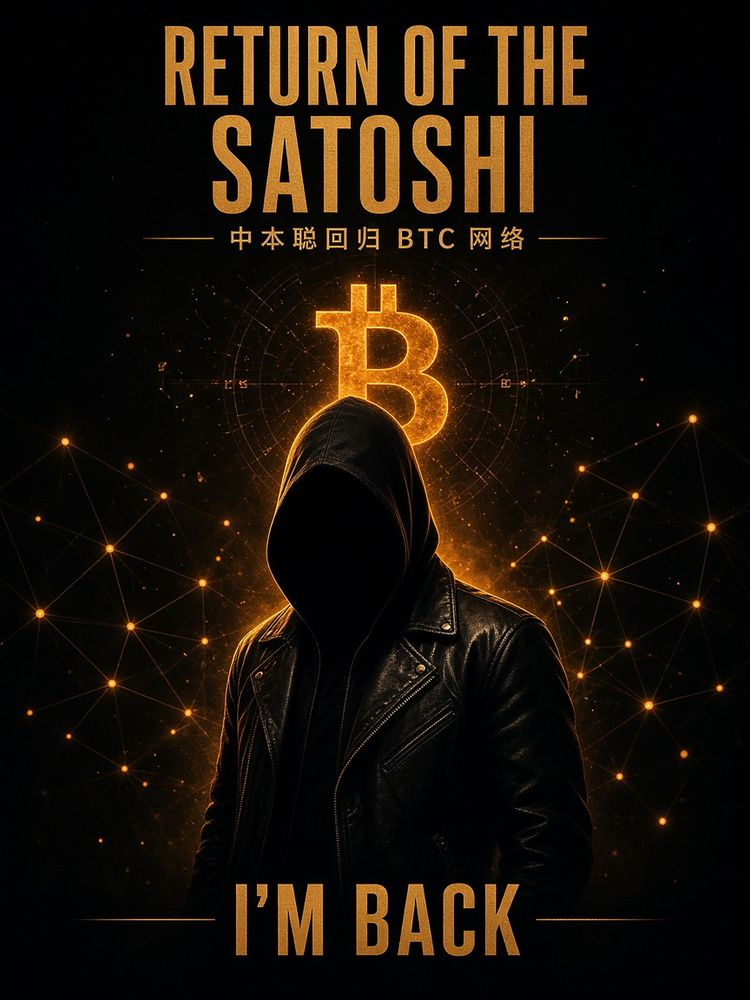

Node runners
0
A parody petition · Not a white-paper sequel
Satoshi returns to the BTC network
I'M BACK
We should make Satoshi CEO of $BTC again.
The network has no office, and the chair was taken apart years ago. That's fine — leather jacket on, hood up, and the hall still lights itself.

No red carpet. No badge. Just a row of people still running nodes, and a line that does not belong in the protocol: I'm Back.
Before we go any further, let's get one thing straight: this network never had a CEO. No badge, no front desk, no office with the lights left on.
We still want Satoshi back.
Not to rewrite the protocol. Not to do a press tour. Just to put on the leather jacket, pull the hood up, walk into a node hall that has been running itself for more than a decade, nod at the mempool, and say: I'm Back.
Difficulty is still adjusting. Blocks are still landing. Someone took the chair apart and called it decentralization. We respect the chair being gone. We just kind of want to see you walk the floor once — and, while you're here, check whether you still remember the password to those few million coins.
If you'd rather stay offstage, that's fine. This letter doesn't need a private key, and it doesn't need a multisig. It only needs a lighter kind of consensus: that we're willing to joke you back into the building.
Please support Satoshi's return to the BTC network.
Yours,
A group of people who believe in decentralization and, every so often, would still like someone to come back on shift
One click and you're in. A nickname and a role are optional; skip them and we'll count you as a Supporter. Satoshi probably won't see this, but the hall will feel a little louder.
Signatures received
0
The genesis block is written. The petition starts with you.
0
0
0
0
I'M BACK
The hall has you down. Satoshi probably still can't see it. We can.
Follow @Layer2hunters Follow the author on X